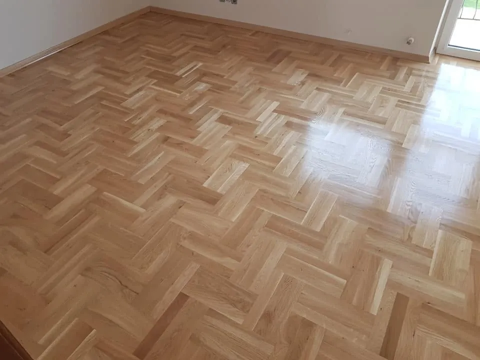
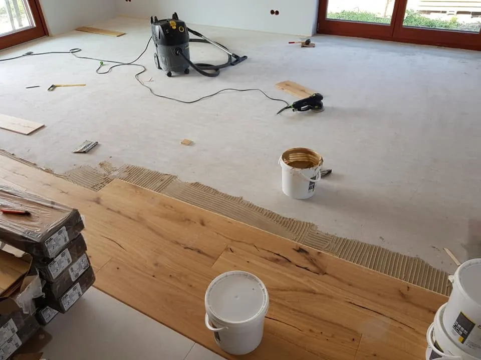
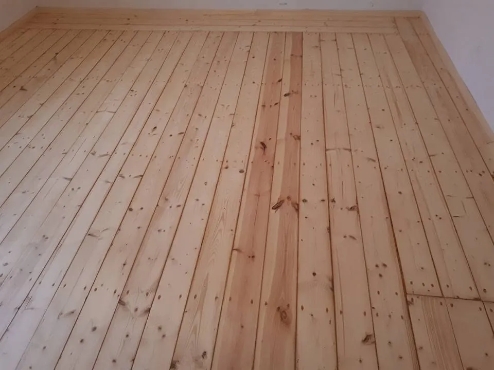

Cyklinowanie, układanie parkietów i renowacja schodów
Zajmujemy się drewnianą podłogą na każdym etapie: doradzamy przy wyborze, kładziemy, szlifujemy, wykańczamy i odnawiamy.

Cyklinowanie bezpyłowe parkietów i podłóg drewnianych
Parkiet z litego drewna ma nad piórem kilka milimetrów warstwy, którą da się zeszlifować. Dlatego podłoga szara od starego lakieru po renowacji często wygląda lepiej niż w dniu, w którym ją położono.
- cyklinowanie bezpyłowe parkietów, mozaiki i desek
- wymiana zniszczonych klepek i wyrównanie różnic wysokości
- szpachlowanie ubytków i szczelin
- polerowanie podłóg
- zdejmowanie farby olejnej ze starych desek

Układanie parkietów, desek i paneli
Drewno chłonie i oddaje wilgoć razem z powietrzem w domu. Zanim przykleimy pierwszą klepkę, mierzymy wilgotność wylewki i pomieszczenia, a wzór dobieramy razem z tobą do kształtu i światła wnętrza.
- parkiet klasyczny na klej, w jodełkę i inne wzory
- mozaika parkietowa
- deski i podłogi drewniane
- panele podłogowe
- sprzedaż podłóg
- pomiar wilgotności drewna i powietrza

Sprzedaż, montaż i renowacja schodów
Surowe schody betonowe obkładamy drewnem, a stare, wydeptane stopnie cyklinujemy i malujemy trzy razy. Krawędź stopnia ściera się najszybciej w całym domu, więc tu na warstwach lakieru nie oszczędzamy.
- sprzedaż i montaż schodów drewnianych
- obkładanie drewnem schodów betonowych
- cyklinowanie i renowacja stopni
- trzykrotne lakierowanie

Parkiety w salach gimnastycznych i halach sportowych
Podłoga w sali gimnastycznej znosi setki par butów dziennie i piłki odbijane w tym samym miejscu. Po cyklinowaniu i lakierowaniu malujemy od nowa linie boisk, żeby sala była gotowa na pierwszą lekcję.
- cyklinowanie parkietów w halach sportowych
- lakierowanie podłóg sportowych
- malowanie linii boisk
- montaż nowych podłóg w salach gimnastycznych

Lakierowanie, olejowanie, woskowanie i barwienie
Powłoka decyduje o tym, jak podłoga wygląda i jak szybko się zużyje. Lakier wodny zostawia naturalny kolor drewna i prawie nie pachnie, poliuretan dobrze znosi chemię i ruch, a olej wnika w drewno i podkreśla słoje.
- lakiery wodne, od matu po pełny połysk
- lakiery poliuretanowe, także dwuskładnikowe
- olejowanie i woskowanie
- barwienie i bejcowanie drewna

Listwy przypodłogowe i renowacja stolarki
Listwa zakrywa szczelinę przy ścianie, której drewno potrzebuje, żeby swobodnie pracować. Dobrze dobrana spina podłogę ze ścianami, a odnowione przy okazji futryny i drzwi nie odcinają się od świeżego parkietu.
- listwy drewniane z montażem i lakierowaniem
- montaż listew MDF
- renowacja futryn, drzwi i stołów
- fachowe doradztwo na każdym etapie
Bez względu na metraż i rodzaj podłogi
Pełny kosztorys masz w ręku dobę po oględzinach
Przez lata ułożyliśmy sposób pracy, w którym wszystkie ustalenia zapadają przed startem, a nie w trakcie.
- Telefon albo mailOpowiadasz, co jest do zrobienia, a my umawiamy się na oględziny.
- Wizyta na miejscuOglądamy podłogę, mierzymy wilgotność, uzgadniamy szczegóły i wstępnie szacujemy koszt.
- Kosztorys w 24 godzinyW ciągu doby dostajesz pełny kosztorys i spokojnie decydujesz.
- Ostatnie ustaleniaZatwierdzamy termin, wzór, kolor i rodzaj powłoki.
- RealizacjaPracujemy według planu, a o każdej zmianie mówimy ci od razu.
- OdbiórOglądasz podłogę razem z nami i dopiero wtedy zamykamy zlecenie.
Pytania przed cyklinowaniem i układaniem
Ile kosztuje cyklinowanie parkietu za m²?
Cyklinowanie ze szpachlowaniem i polerowaniem kosztuje od 50 zł za m², a razem z trzykrotnym lakierowaniem od 85 zł za m² [ceny z poprzedniej strony, do potwierdzenia]. Ostateczna kwota zależy od stanu drewna, metrażu i lakieru, dlatego podajemy ją po bezpłatnych oględzinach. Wszystkie stawki są w cenniku.
Ile trwa cyklinowanie i lakierowanie parkietu?
Cyklinowanie z lakierowaniem trwa zwykle kilka dni, bo każda warstwa lakieru musi wyschnąć przed nałożeniem następnej. Dokładny harmonogram dla twojej podłogi znajdziesz w kosztorysie.
Kiedy można chodzić po świeżo polakierowanym parkiecie?
Po parkiecie pokrytym lakierem wodnym można ostrożnie chodzić w skarpetkach zwykle po dobie. Meble wstawiaj po kilku dniach, na filcowych podkładkach, a dywany rozkładaj po około dwóch tygodniach, kiedy lakier osiągnie pełną twardość.
Czy cyklinowanie bezpyłowe brudzi mieszkanie?
Cyklinowanie bezpyłowe ogranicza kurz do minimum, bo maszyna z odciągiem zbiera pył do worka w trakcie szlifowania. W mieszkaniu nie osiada szara warstwa na meblach, a drobny pył przy krawędziach sprzątamy po sobie.
Czy da się odnowić parkiet albo deski pomalowane farbą olejną?
Podłogę pokrytą farbą olejną da się odnowić, choć zdjęcie farby wymaga więcej przejść cykliniarką niż zwykły lakier. Dlatego ta usługa ma w cenniku osobną stawkę, a efekt zobaczysz w porównaniach w realizacjach.
Ile razy można cyklinować parkiet?
Parkiet z litego drewna można cyklinować wielokrotnie, bo przy każdej renowacji schodzi tylko cienka warstwa. Deska warstwowa ma cieńszą warstwę szlachetnego drewna, więc pozwala na mniej renowacji. Podczas oględzin ocenimy, ile zapasu ma twoja podłoga.
Jak przygotować mieszkanie do cyklinowania?
Przed cyklinowaniem pomieszczenie powinno być puste, bez mebli i dywanów. Czy zdejmować listwy i co jeszcze zabezpieczyć, powiemy ci przy oględzinach.
Na jakim terenie działa firma?
Działamy w województwie śląskim, małopolskim i świętokrzyskim, m.in. w Zawierciu, Porębie, Myszkowie, Siewierzu, Olkuszu, Wolbromiu, Szczekocinach, Częstochowie, Bytomiu i Tarnowskich Górach.
Wyślij zdjęcia podłogi albo zadzwoń
Na podstawie zdjęć wstępnie ocenimy, co da się zrobić, a dokładną kwotę podamy po oględzinach.